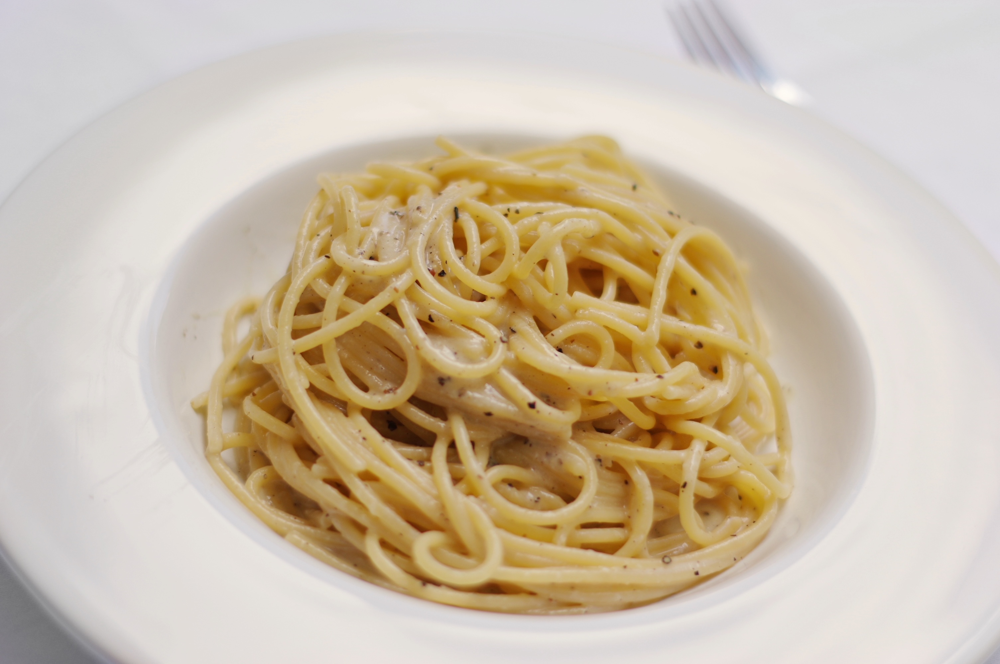

Home
Cacio e Pepe

Photo by Der Zahir, licensed under
CC BY-SA 4.0
.
Description
Chicken Katsu is a simple Japanese dish made of deep-fried chicken coated in panko (japanese breadcrumbs).
It can be served with white rice or shredded lettuce and tonkatsu sauce, which you can buy at Asian supermarkets.
Ingredients (4 servings)
- 450g spaghetti
- olive oil
- 2 minced glove of garlic
- 1 table spoon ground black pepper
- 200g pecorino romano cheese
- 2l pasta water
Steps
- Boil your spaghetti in salted water for about 8 minutes. Keep some of that pasta water!!!
- Grate a picorino cheese.
- Add 3-4 tablespoons of pasta water, and mix the cheese until creamy consistancy.
- Toast ground pepper in a pan on a low heat for about 30 seconds.
- Add a ladle of pasta water to your pan and let it simmer for a couple of minutes.
- Add the pasta and cook for 2 to 3 minutes, stirring constantly.
- Take you pasta of the heat, add the pecorino creme and mix it.
- Plate the pasta, then finish with extra sauce and a sprinkle of Pecorino.
- Enjoy!